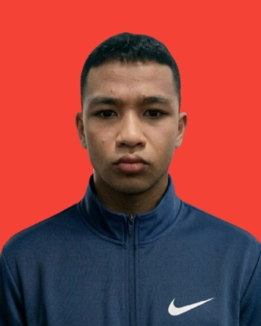

|

Pendidikan
Sarjana Informatika | IPK : 3.35/4.00
Institut Teknologi Del (2019 - 2022)
- SMK Negeri 1 Lumbanjulu
- SMP Yayasan Bonapasogit Sejahtera
- SD Yayasan Bonapasogit Sejahtera
Pengalaman
Devisi Pendidikan | Organisasi
Himpunan Mahasiswa Sarjana Informatika (2019 - 2021)
Web Developer | Volunteer
Volunteer di Selepas SMA (2020 - 2021)
Web Developer | Kerja Praktik
Kerja Praktik di Techfazz (April 2021 - September 2021)
Dasar Pemrograman | Asisten
Pemrograman Berorientasi Objek | Asisten
Pengembangan Aplikasi Mobile | Asisten
Pengembangan Aplikasi Berbasis Web | Asisten
Pengembangan Game | Asisten
Pemrograman Berbasis Service | Asisten
Pengujian & Pengembangan Perangkat Lunak | Asisten
Ethical Hacking & Penetration Testing | Asisten
Asisten Dosen di Institut Teknologi Del (2022 - Sekarang)
Sertifikat
Dicoding
- Menjadi Back-End Developer Expert dengan JavaScript (November 2023)
- Menjadi Android Developer Expert (Desember 2023)
- Menjadi React Web Developer Expert (Desember 2025)
Portfolio
Github | @auxtern
- Forum API | JavaScript | HapiJS
- Github Expose | Kotlin | Android
- Kas Tracking | PHP | Laravel
- Sorun | .Net | Visual Studio
- Delcom Local Server | C# | Unity
- Zodiac Pedia | Dart | Flutter
- Tourist Map | Kotlin | Android
Itch.io | @auprojects
- Catlien | C# | Unity (2D)
- Breaking Loneliness | C# | Unity (3D)
- Escape from Ignorance | C# | Unity (3D)
Others
- Delcom Public API | PHP | Laravel (public-api.delcom.org)
- Delcom Tasks | Kotlin | Android (playstore)
|
|
Abdullah Ubaid
Sarjana Informatika
Email: abdullah.ubaid@delcom.org
WA: +62 812 3456 7890
Saya adalah orang yang suka belajar memiliki rasa empati yang tinggi dan menjunjung tinggi tanggung jawab.
Keahlian
Programming
- Java
- JavaScript
- Kotlin
- PHP
- Python
Framework
- Android Compose
- Flask
- Laravel
- NextJS
- ReactJS
Tools
- Katlon
- Visual Paradigm
- Visual Studio Code
|